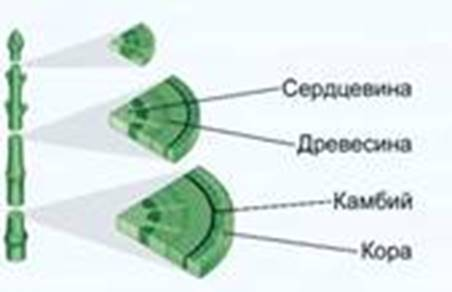
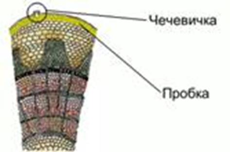
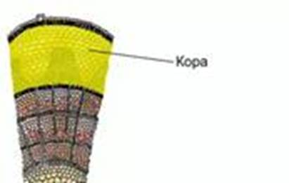
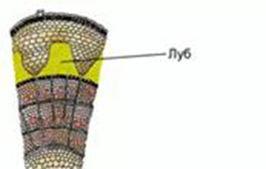
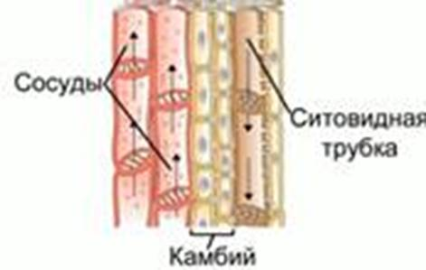
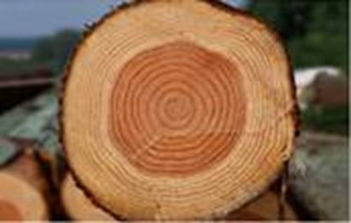
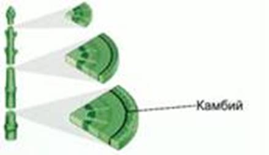
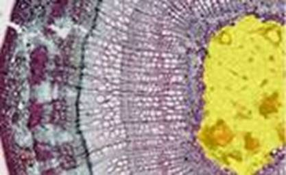
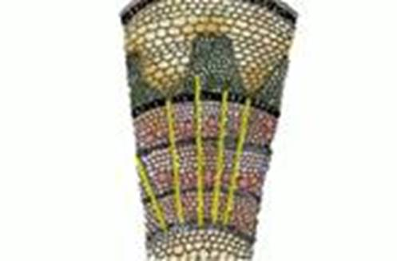

На свежем спиле ветви покрытосеменного двудомного деревянистого растения (см. Рис. 1) легко различимы особенности строения стебля: кора, камбий, древесина, сердцевина.

Рис. 1. Спил ветви дерева
Кожица – первичная покровная ткань, покрывающая молодые стебли этого года. Со временем кожица замещается пробкой – вторичной покровной тканью, которая состоит из мертвых клеток и воздуха и образуется за счет деления клеток пробкового камбия (феллогена). Кожица и пробка выполняют защитную функцию.
В кожице имеются устьицы, через которые происходит транспирация. В пробке развиваются чечевички (см. Рис. 2) – маленькие бугорки с отверстиями. Хорошо заметны они у бузины, дуба, черемухи, образуются клетками основной ткани с большими межклетниками. Через них осуществляется газообмен.

Рис. 2. Чечевички
Корка – третичная покровная ткань (корковый дуб). Состоит из чередующихся слоев пробки и других отмерших тканей растения.
Клетки коры (см. Рис. 3) расположены под кожицей и пробкой. Внешнюю часть коры образует механическая ткань (колленхима). Внутреннюю часть образует паренхима, клетки могут содержать хлорофилл.

Рис. 3. Кора
Луб (см. Рис. 4) – внутренний слой коры. Состоит из ситовидных трубок, лубяных волокон, клеток основной ткани.

Рис. 4. Луб
Ситовидная трубка – вертикальный ряд вытянутых клеток, у которых поперечные стенки пронизаны отверстиями. Это проводящая ткань (см. Рис. 5), по которой перемещаются растворы питательных веществ из листьев в стебли и корни. Клетки не имеют ядер. Вместе с клетками основной ткани образуют мягкий луб.

Рис. 5. Проводящие элементы стебля
Лубяные волокна – отмершие клети с одревесневшими стенками. Представляют собой механическую ткань стебля. В стеблях льна, липы и др. лубяные волокна сильно развиты и прочны. Это обуславливает их использование в рукоделии и изготовлении тканей. Образуют твердый луб.
Плотный, самый широкий слой, лежащий под корой. Древесина – основная часть древесного ствола. Состоит из клеток проводящей ткани (сосуды), механической ткани (волокна), основной ткани.
Годичное кольцо прироста (см. Рис. 6) – все слои клеток древесины, образовавшиеся весной, летом и осенью данного года. Осенние клетки мельче весенних, поэтому для деревьев умеренных широт отчетливо видна граница между 2 годичными кольцами.

Рис. 6. Годичные кольца
По количеству годичных колец можно оценить возраст спиленного дерева. По толщине кольца можно судить об условиях роста дерева в данном году. Чем толще годичное кольцо, тем более благоприятны были условия. При совсем неблагоприятных условиях годичные кольца соседних лет могут сливаться между собой. У деревьев с очень медленно растущим стволом годичные кольца могут сливаться. При быстром росте ствола (бальзовое дерево) годичные кольца также не видны.
Древесина входит в состав травянистых стеблей.
Расположен между корой и древесиной (см. Рис. 7). Состоит из узких длинных клеток меристемы. Визуально не отличим.

Рис. 7. Камбий
Весной клетки камбия делятся, что приводит к образованию новых клеток луба (в сторону коры) и новых клеток древесины (в сторону древесины). Так происходит рост стебля в толщину. Новые клетки зрелого стебля образуются только путем деления камбия. Зимой деление клеток прекращается.
Наиболее рыхлый слой, расположенный в центре стебля. Служит для отложения питательных веществ. Хорошо заметна у бузины, осины.
Состоит из крупных клеток основной ткани (см. Рис. 8) с тонкими оболочками.

Рис. 8. Сердцевина (выделена желтым)
От сердцевины в радиальном направлении через древесину и луб проходят сердцевинные лучи (см. рис. 9), состоящие из клеток основной ткани.

Рис. 9. Сердцевинные лучи (выделены желтым)
У некоторых растений с возрастом клетки сердцевины разрушаются, и внутри ствола образуется полость – дупло.
Внутреннее строение ветки дерева
Рассмотрите 2-годовалую ветку дерева или кустарника. Найдите чечевички. Назовите их функцию. При помощи ножа или бритвы приготовьте поперечный и продольный срезы ветки. Рассмотрите слои на срезе. Используя учебник или иллюстрации нашего урока, определите название каждого слоя.
Иглой отделите небольшой участок коры. Попробуйте ее изогнуть, разделить или сломать. Назовите наружный слой коры. Что такое луб? Назовите его функции.
На продольном срезе рассмотрите кору, древесину и сердцевину. При помощи препаровальной иглы прощупайте каждый из слоев на прочность.
Проведите пальцем по поверхности древесины в месте отделения коры. Опишите ощущения.
Зарисуйте продольный и поперечный срезы, обозначьте названия слоев стебля.
На спиле дерева найдите древесину. При помощи лупы подсчитайте количество годичных колец. Так определите возраст дерева. Попробуйте установить, какие слои древесины старше: лежащие ближе к коре или к сердцевине. Обоснуйте.
Травянистые растения имеют слабо развитые механические ткани, практически не одревесневающие клетки, т.е. их оболочки не пропитываются лигнином. Стебли двудольных растений имеют камбий, поэтому в зрелом виде они способны расти в толщину. В стеблях однодольных камбий отсутствует.
Интересное о деревьях
У большинства деревьев гладкая пробка со временем замещается трещиноватой коркой.
У плодовых деревьев корка образуется на 6-8 году жизни, у липы – на 10-12, у дуба – на 25 году. У платана и эвкалипта корка на стволе отсутствует.
Одни из наиболее долгоживущих деревьев – баобаб и драцена. В нашей стране наиболее долговечны кипарисы (живут до 3000 лет). Меньше живут дубы и каштаны.
Список литературы
1. Биология. Бактерии, грибы, растения. 6 кл.: учеб. для общеобразоват. учреждений / В.В. Пасечник. – 14-е изд., стереотип. – М.: Дрофа, 2011. – 304 с.: ил.
2. Тихонова Е.Т., Романова Н.И. Биология, 6. – М.: Русское слово.
3. Исаева Т.А., Романова Н.И. Биология, 6. – М.: Русское слово.
Дополнительные рекомендованные ссылки на ресурсы сети Интернет
1. Схемо.рф (Источник).
2. Referat.business-top.info (Источник).
3. Beaplanet.ru (Источник).
Домашнее задание
1. Биология. Бактерии, грибы, растения. 6 кл.: учеб. для общеобразоват. учреждений / В.В. Пасечник. – 14-е изд., стереотип. – М.: Дрофа, 2011. – 304 с.: ил. – с. 129, задания и вопрос 2, 6 (Источник).
2. Из чего состоит луб? Охарактеризуйте его компоненты.
3. Что такое сердцевинные лучи? Какова их функция?
4. * Можно ли с помощью годичных колец определить возраст травянистых растений? Обоснуйте ответ.